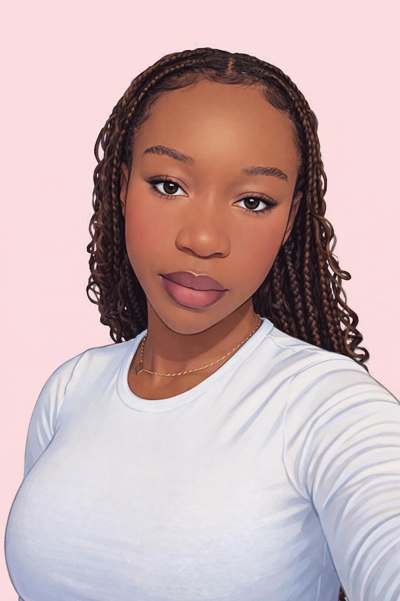
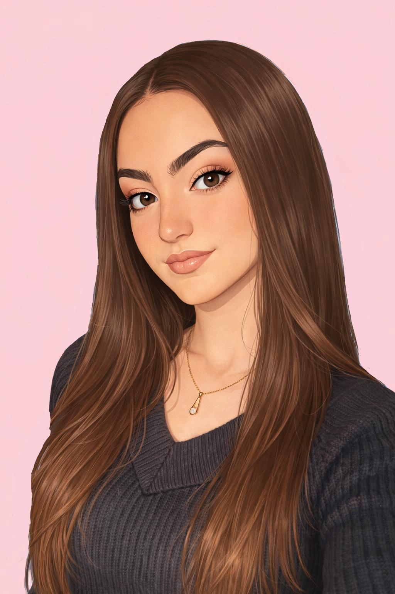
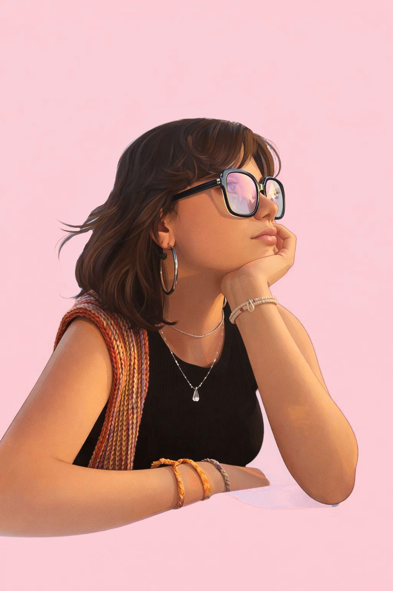
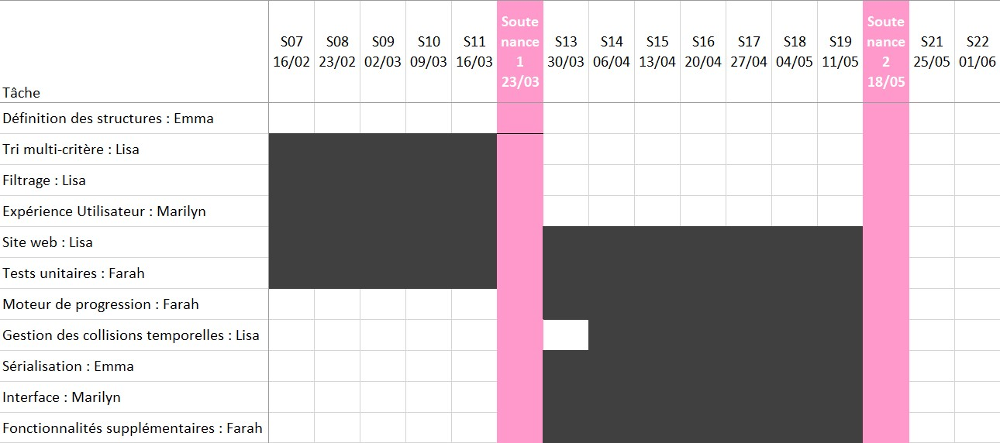

Présentation du projet

L’idée, c’est de proposer un outil qui aide à mieux structurer son temps, en rassemblant au même endroit tout ce qui compte, que ce soit pour le travail ou le quotidien. On voulait quelque chose d’intuitif, mais assez complet pour répondre aux besoins de la plupart des gens.
Grâce à cette application, vous pourrez organiser vos tâches et vos événements à venir, et consulter toutes ces informations de différentes manières pour mieux vous
y retrouver.
Nous ne cherchons pas à copier ce qui existe déjà, mais plutôt à concevoir un calendrier à la fois pratique et harmonieux, riche en fonctionnalités utiles tout en
restant clair et agréable à utiliser.
C’est aussi pour nous l’occasion de mettre en œuvre nos connaissances en programmation, en gestion des données et en développement, le tout en collaborant sur un projet concret que nous souhaitons mener à bien.
Passons aux présentations

Marilyn TAWAMBA( marilyn.tawamba@epita.fr )
Je m'appelle Marilyn TAWAMBA et je fais partie du groupe en charge de ce projet de logiciel d'organisation. Mon parcours en programmation a réellement débuté avec mon entrée à l'EPITA : j'étais alors novice, mais cette première année intensive m'a permis d'acquérir et de consolider des bases solides en algorithmique et en développement.Aujourd'hui, j‘ai des bases solides dans différents langages de programmation, tels que C, le C# et le Python. J'ai pu mettre ces compétences en pratique lors de projets variés, notamment l'année dernière sur le projet de jeu vidéo qui a été une véritable épreuve pour moi. Sur le tas, j’ai aussi eu à apprendre le HTML et le CSS, me servant à la création du site web du jeu vidéo en question. Ce projet en Rust représente pour moi une étape clé : il s'agit de transposer mes connaissances actuelles vers un langage exigeant en termes de gestion mémoire, tout en approfondissant mes capacités en architecture logicielle et en algorithmique.
Finalement, c'est précisément ce qui me passionne dans l'informatique : ce besoin d'apprentissage constant et cette confrontation permanente à de nouveaux défis techniques. Passer d'une approche novice à la maîtrise de concepts complexes, tout en devant s'adapter sans cesse à de nouvelles technologies comme le Rust, constitue pour moi l'essence même de nos études.

Lisa RIVES( lisa.rives@epita.fr )
Je m’appelle Lisa RIVES et je fais partie de l’équipe chargée de ce projet. Je maîtrise plusieurs langages de programmation, comme le C, le C#, Caml, Python et SQL, ainsi que les technologies web comme le CSS et le HTML. Grâce à ces compétences, je pourrais notamment contribuer à la création du site web du projet, ce qui permettra de rendre notre application plus accessible et mieux présentée.Au cours de mon parcours, j’ai eu l’occasion de réaliser plusieurs projets variés qui m’ont permis de développer ma rigueur et ma créativité. J’ai par exemple développé en groupe, un jeu vidéo en C# dans lequel un astronaute atterrit sur une planète et doit réussir à la quitter en réparant son vaisseau. J’ai également conçu plusieurs sites web, ainsi qu’un jeu en Python reproduisant le principe du jeu du Simon, basé sur la mémorisation d’une séquence de couleurs et sa reproduction. De plus, j’ai aussi réalisé, avec une camarade, une application de réalité augmentée, ce qui m’a permis de travailler sur un projet innovant et d’explorer de nouvelles technologies.
Enfin, je commence actuellement à apprendre le langage Rust, et ce projet représente une excellente opportunité pour progresser et améliorer mes compétences. Travailler sur une application concrète et complète me permettra de mieux comprendre la logique du langage, ses bonnes pratiques, et de gagner en expérience tout au long du développement.
Farah MAHMOUDI ( farah.mahmoudi@epita.fr )
Je m’appelle Farah MAHMOUDI et je fais partie de l’équipe chargée de ce projet de logiciel d’organisation. Au cours de mon parcours, j’ai acquis des compétences en programmation, notamment en C, C# et Python, que j’ai pu mettre en pratique à travers différents projets.J’ai notamment réalisé un projet de jeu vidéo en 3D en C#, se déroulant sur une île infestée de zombies et relevant du genre survival horror. Ce projet m’a permis de travailler sur la logique de jeu, la structuration du code et la gestion de projets plus complexes. En parallèle, mes expériences en Python et en C m’ont permis de consolider mes bases en algorithmique et en programmation.
Ce projet en Rust représente pour moi une opportunité d’approfondir mes compétences et de découvrir un langage exigeant, notamment en matière de gestion mémoire. Le développement d’une application concrète me permettra de progresser techniquement et de renforcer mon expérience en conception logicielle.

Emma RUCAY( emma.rucay@epita.fr )
Je m’appelle Emma RUCAY, je fais partie de ce projet en Rust.Je suis passionnée par l'informatique, j'ai découvert la programmation lors de ma première année à l'EPITA. Ce cursus exigeant m'a rapidement permis d'acquérir des bases solides et de relever mes premiers défis en matière de conception logicielle.
Mon premier projet marquant en équipe a été la création d'un jeu vidéo. J'ai pris en charge l'intelligence artificielle (IA), un domaine qui m'a immédiatement fascinée par sa complexité. Parallèlement à l'aspect technique, j'ai également contribué à l'univers du jeu en travaillant sur le scénario, l'histoire et la création de certains visuels, donnant ainsi une âme et une cohérence artistique au projet.
Forte de cette expérience, j'ai ensuite endossé le rôle de cheffe de groupe lors de mon projet de deuxième année. Cette position m'a permis de développer mes compétences en gestion d'équipe et en coordination technique. Sur le plan du développement, je me suis à nouveau concentrée sur la conception d'une IA, mais avec un niveau de difficulté nettement supérieur. Ce défi m'a poussée à approfondir mes connaissances en algorithmique et à gérer des problématiques d'optimisation et de comportement beaucoup plus complexes que lors de mes précédentes réalisations.
Aujourd'hui, je combine ma rigueur de développeuse avec une vision globale du projet, capable de mener une équipe vers des objectifs techniques ambitieux tout en veillant à la qualité du code et à l'intérêt conceptuel du produit final.
La chronologie de réalisation

Les problèmes rencontrés, et les solutions envisagées
- probleme... -> résolution : blabla